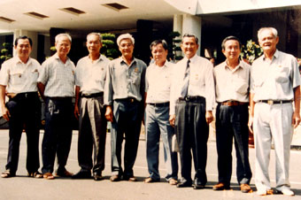

Ba mươi năm trước, sau đại thắng mùa xuân 30-4-1975, trong số những nhân vật của ngụy quyền Sài Gòn được người ta nhắc nhở và thắc mắc nhiều nhất là Chuẩn tướng Nguyễn Hữu Hạnh - phụ tá Tổng tham mưu trưởng cuối cùng của quân đội ngụy quyền Sài Gòn. Ông ta là ai: người của cách mạng cài vào quân đội ngụy quyền hay một kẻ thức thời vào phút cuối? Vai trò của Chuẩn tướng Nguyễn Hữu Hạnh như thế nào?
Nhân dịp kỷ niệm 30 năm ngày giải phóng hoàn toàn miền Nam, thống nhất đất nước, chúng tôi xin giới thiệu Truyện ký “Vị Chuẩn tướng cận thần” của nhà văn Hà Bình Nhưỡng, nhằm cung cấp cho bạn đọc những tư liệu chưa biết về vai trò của ông Nguyễn Hữu Hạnh…

Một số các chiến sĩ Binh vận ưu tú của Sài Gòn Gia Định trong ngày họp mặt truyền thống năm 1995. Từ trái qua phải Lê Quốc Lương Bảy Lương (thứ 2), Tư Dũng (thứ 4), Nguyễn Hữu Hạnh (thứ 6), Nguyễn Thành Trung (thứ 7) là những nhân vật có mặt trong truyện này.